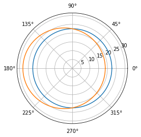
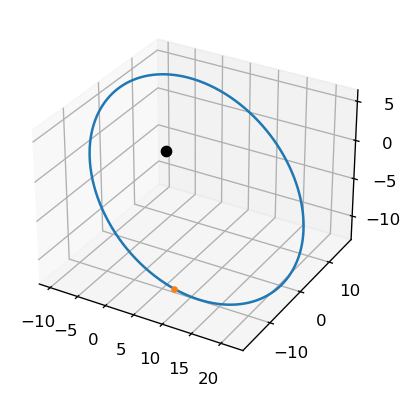
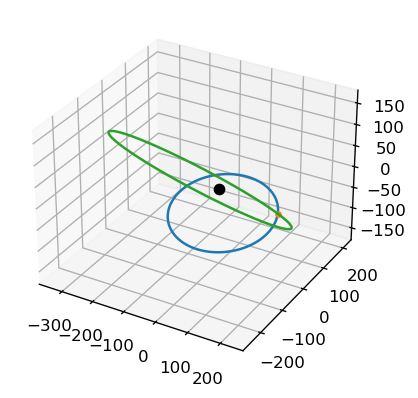

Refs
Refs#
import numpy as np
def deltaV_Hohmann_circular(r_a, r_b, mu):
#rb greater than ra
a = r_b/r_a
A = 1/np.sqrt(a)
B = -1*(np.sqrt(2)*(1-a))/np.sqrt(a*(1+a))
C = np.sqrt(mu/r_a)
return (A + B - 1)*C
def deltaV_Bielliptic_circular(r_a, r_b, r_c, mu):
#rb is transfer ellipse
a = r_c/r_a
b = r_b/r_a
A = np.sqrt((2*(a + b))/(a*b))
B = -1*((1 + np.sqrt(a))/np.sqrt(a))
C = -1*np.sqrt(2/(b*(1+b)))*(1-b)
D = np.sqrt(mu/r_a)
return (A + B + C)*D
def t_circular(r, mu):
return ((2*np.pi)/np.sqrt(mu))*r**1.5
def t_ellipse(r_p, r_a, mu):
a = (r_a + r_p)/2
return ((2*np.pi)/np.sqrt(mu))*a**1.5
#Find the total delta-v requirement for a bi-elliptical Hohmann
#transfer from a geocentric circular orbit of 7000 km radius to
#one of 105 000 km radius. Let the apogee of the first ellipse
#be 210 000 km. Compare the delta-v schedule and total flight time
#with that for an ordinary single Hohmann transfer ellipse.
r_o1 = 7000
r_o2 = 210000
r_o3 = 105000
mu = 398600
#Compare delta v
dv_hohmann = deltaV_Hohmann_circular(r_o1, r_o3, mu)
dv_biell = deltaV_Bielliptic_circular(r_o1, r_o2, r_o3, mu)
if dv_biell < dv_hohmann:
print('Bi-elliptic transfer more efficient by ' +
str(round(dv_hohmann - dv_biell, 4)) + ' km/s')
#Compare flight times
#Hohmann:
dt_hohmann = t_ellipse(r_o1, r_o3, mu)/2
#Bi-elliptic:
dt_biell_1 = t_ellipse(r_o1, r_o2, mu)/2
dt_biell_2 = t_ellipse(r_o2, r_o3, mu)/2
dt_biell = dt_biell_1 + dt_biell_2
print('Bi-elliptic transfer takes ' +
str(round((dt_biell - dt_hohmann)/3600, 4)) + ' hours longer')
Bi-elliptic transfer more efficient by 0.0178 km/s
Bi-elliptic transfer takes 117.4795 hours longer
import matplotlib.pyplot as pl
#Orbit Equation Plotter
def orbit_equation_r(h, mu, e, theta):
A = h**2/mu
B = 1 + e*np.cos(theta)
return A/B
theta_array = np.linspace(0, 2*np.pi, 200)
r_array = [orbit_equation_r(30, 40, 0, theta) for theta in theta_array]
r_array_1 = [orbit_equation_r(30, 40, 0.2, theta) for theta in theta_array]
fig, ax = pl.subplots(subplot_kw={'projection': 'polar'})
ax.plot(theta_array, r_array)
ax.plot(theta_array, r_array_1)
ax.set_rmax(1.4*max((r_array)))
pl.show()

import matplotlib.pyplot as plt
from mpl_toolkits.mplot3d import Axes3D
#Required functions:
def stumpff_S(z):
if z > 0:
x = np.sqrt(z)
return (x - np.sin(x))/(x)**3
elif z < 0:
y = np.sqrt(-z)
return (np.sinh(y) - y)/(y)**3
else:
return (1/6)
def stumpff_C(z):
if z > 0:
return (1 - np.cos(np.sqrt(z)))/z
elif z < 0:
return (np.cosh(np.sqrt(-z)) - 1)/(-z)
else:
return(1/2)
def find_f_x(x, r0, a):
A = x**2/r0
B = stumpff_C(x**2/a)
return 1 - A*B
def find_g_x(x, dt, mu, a):
A = x**3/np.sqrt(mu)
return dt - A*stumpff_S(x**2/a)
def find_f_dot_x(x, mu, r, r0, a):
A = np.sqrt(mu)/(r*r0)
B = stumpff_S(x**2/a)*(x**3/a)
return A*(B - x)
def find_g_dot_x(x, r, a):
A = x**2/r
return 1 - A*stumpff_C(x**2/a)
def dt_from_x(x, args):
r0, vr0, mu, a = args
#Equation 3.46
A = (r0*vr0/np.sqrt(mu))*(x**2)*stumpff_C(x**2/a)
B = (1 - r0/a)*(x**3)*stumpff_S(x**2/a)
C = r0*x
LHS = A + B + C
return LHS/np.sqrt(mu)
def r_from_x(r0_vector, v0_vector, x, dt, a, mu):
r0 = np.linalg.norm(r0_vector)
f = find_f_x(x, r0, a)
g = find_g_x(x, dt, mu, a)
return f*r0_vector + g*v0_vector
def e_from_r0v0(r0_v, v0_v, mu):
r0_vector = np.array(r0_v)
v0_vector = np.array(v0_v)
r0 = np.linalg.norm(r0_vector)
v0 = np.linalg.norm(v0_vector)
vr0 = np.dot(r0_vector, v0_vector)/r0
#Find eccentricity
A = (v0**2 - (mu/r0))*r0_vector
B = -r0*vr0*v0_vector
e_vector = (1/mu)*(A + B)
e = np.linalg.norm(e_vector)
return e
#Actual function:
def plot_orbit_r0v0(r0_v, v0_v, mu, resolution=1000, hyp_span=1):
r0_vector = np.array(r0_v)
v0_vector = np.array(v0_v)
#Use Algorithm 3.4
r0 = np.linalg.norm(r0_vector)
v0 = np.linalg.norm(v0_vector)
vr0 = np.dot(r0_vector, v0_vector)/r0
a_orbit = 1/((2/r0) - (v0**2/mu))
#Check for orbit type, define x_range
#resolution = number of points plotted
#span = width of parabolic orbit plotted\
e = e_from_r0v0(r0_v, v0_v, mu)
if e >= 1:
x_max = np.sqrt(np.abs(a_orbit))
x_array = np.linspace(-hyp_span*x_max, hyp_span*x_max, resolution)
pos_array = np.array([r_from_x(r0_vector, v0_vector,
x, dt_from_x(x, [r0, vr0, mu, a_orbit]),
a_orbit, mu) for x in x_array])
else:
x_max = np.sqrt(a_orbit)*(2*np.pi)
x_array = np.linspace(0, x_max, resolution)
pos_array = np.array([r_from_x(r0_vector, v0_vector,
x, dt_from_x(x, [r0, vr0, mu, a_orbit]),
a_orbit, mu) for x in x_array])
#plot in 3d
fig = plt.figure(dpi = 120)
ax = fig.add_subplot(111, projection='3d')
ax.plot(pos_array[:, 0], pos_array[:, 1], pos_array[:, 2])
ax.plot([r0_vector[0]], [r0_vector[1]], [r0_vector[2]], '.')
ax.plot([0], [0], [0], 'o', color='k')
######
#Units of r0 in km, v0 in km/s, mu in km3/s2
#Change units as necessary (all consistent)
#mu is G*M, m mass of primary body, G is gravitational constant
plot_orbit_r0v0([10, -15, -10],
[47, 19, -21],
74000)

#Required functions:
def stumpff_S(z):
if z > 0:
x = np.sqrt(z)
return (x - np.sin(x))/(x)**3
elif z < 0:
y = np.sqrt(-z)
return (np.sinh(y) - y)/(y)**3
else:
return (1/6)
def stumpff_C(z):
if z > 0:
return (1 - np.cos(np.sqrt(z)))/z
elif z < 0:
return (np.cosh(np.sqrt(-z)) - 1)/(-z)
else:
return(1/2)
def find_f_x(x, r0, a):
A = x**2/r0
B = stumpff_C(x**2/a)
return 1 - A*B
def find_g_x(x, dt, mu, a):
A = x**3/np.sqrt(mu)
return dt - A*stumpff_S(x**2/a)
def find_f_dot_x(x, mu, r, r0, a):
A = np.sqrt(mu)/(r*r0)
B = stumpff_S(x**2/a)*(x**3/a)
return A*(B - x)
def find_g_dot_x(x, r, a):
A = x**2/r
return 1 - A*stumpff_C(x**2/a)
def dt_from_x(x, args):
r0, vr0, mu, a = args
#Equation 3.46
A = (r0*vr0/np.sqrt(mu))*(x**2)*stumpff_C(x**2/a)
B = (1 - r0/a)*(x**3)*stumpff_S(x**2/a)
C = r0*x
LHS = A + B + C
return LHS/np.sqrt(mu)
def r_from_x(r0_vector, v0_vector, x, dt, a, mu):
r0 = np.linalg.norm(r0_vector)
f = find_f_x(x, r0, a)
g = find_g_x(x, dt, mu, a)
return f*r0_vector + g*v0_vector
def e_from_r0v0(r0_v, v0_v, mu):
r0_vector = np.array(r0_v)
v0_vector = np.array(v0_v)
r0 = np.linalg.norm(r0_vector)
v0 = np.linalg.norm(v0_vector)
vr0 = np.dot(r0_vector, v0_vector)/r0
#Find eccentricity
A = (v0**2 - (mu/r0))*r0_vector
B = -r0*vr0*v0_vector
e_vector = (1/mu)*(A + B)
e = np.linalg.norm(e_vector)
return e
#Actual functions:
def orbit_r0v0(r0_v, v0_v, mu, resolution=1000, hyp_span=1):
r0_vector = np.array(r0_v)
v0_vector = np.array(v0_v)
#Use Algorithm 3.4
r0 = np.linalg.norm(r0_vector)
v0 = np.linalg.norm(v0_vector)
vr0 = np.dot(r0_vector, v0_vector)/r0
a_orbit = 1/((2/r0) - (v0**2/mu))
#Check for orbit type, define x_range
#resolution = number of points plotted
#span = width of parabolic orbit plotted\
e = e_from_r0v0(r0_v, v0_v, mu)
if e >= 1:
x_max = np.sqrt(np.abs(a_orbit))
x_array = np.linspace(-hyp_span*x_max, hyp_span*x_max, resolution)
pos_array = np.array([r_from_x(r0_vector, v0_vector,
x, dt_from_x(x, [r0, vr0, mu, a_orbit]),
a_orbit, mu) for x in x_array])
else:
x_max = np.sqrt(a_orbit)*(2*np.pi)
x_array = np.linspace(0, x_max, resolution)
pos_array = np.array([r_from_x(r0_vector, v0_vector,
x, dt_from_x(x, [r0, vr0, mu, a_orbit]),
a_orbit, mu) for x in x_array])
return pos_array
def maneuver_plot(r0_v, v0_v, dv_v, mu, resolution=1000, hyp_span=1):
#Plot initial orbit
initial_orbit = orbit_r0v0(r0_v, v0_v, mu, resolution=resolution,
hyp_span=hyp_span)
fig = plt.figure(dpi = 120)
ax = fig.add_subplot(111, projection='3d')
ax.plot(initial_orbit[:, 0], initial_orbit[:, 1],
initial_orbit[:, 2])
ax.plot([np.array(r0_v)[0]], [np.array(r0_v)[1]],
[np.array(r0_v)[2]], '.')
ax.plot([0], [0], [0], 'o', color='k')
#Find new orbit
v0_dv = np.array(v0_v) + np.array(dv_v)
new_orbit = orbit_r0v0(r0_v, v0_dv, mu, resolution=resolution,
hyp_span=hyp_span)
#Plot new orbit
ax.plot(new_orbit[:, 0], new_orbit[:, 1],
new_orbit[:, 2])
######
#Units of r0 in km, v0 in km/s, mu in km3/s2
#Change units as necessary (all consistent)
#mu is G*M, m mass of primary body, G is gravitational constant
maneuver_plot([203, -30, 0],
[-18, 33, 0],
[23, 1, -30],
344000, hyp_span=5)

import scipy as sci
import matplotlib.pyplot as plt
#Define universal gravitation constant
G = 6.67408e-11
#Reference quantities
m0 = 1.989e+30 #kg #mass of the sun
r0 = 5.326e+12 #m #distance between stars in Alpha Centauri
v0 = 30000 #m/s #relative velocity of earth around the sun
t0 = 79.91*365*24*3600*0.51 #s #orbital period of Alpha Centauri
#Net constants
k1 = G*t0*m0/(r0**2*v0)
k2 = v0*t0/r0
#Define masses
m1 = 1.1 #Alpha Centauri A
m2 = 0.907 #Alpha Centauri B
#Define initial position vectors
r1 = np.array([-0.5,0,0],dtype="float64")
r2 = np.array([0.5,0,0],dtype="float64")
#Find Centre of Mass
r_com = (m1*r1+m2*r2)/(m1+m2)
#Define initial velocities
v1 = np.array([0.01,0.01,0],dtype="float64")
v2 = np.array([-0.05,0,-0.1],dtype="float64")
#Find velocity of COM
v_com = m1*v1+m2*v2/(m1+m2)
#initial state
yinit = np.array([r1, r2, v1, v2])
yinit = yinit.flatten()
#A function defining the equations of motion
def TwoBodyEquations(w,t,G,m1,m2):
r1 = w[:3]
r2 = w[3:6]
v1 = w[6:9]
v2 = w[9:12]
r = sci.linalg.norm(r2-r1) #Calculate magnitude or norm of vector
dv1dt = k1*m2*(r2-r1)/r**3
dv2dt = k1*m1*(r1-r2)/r**3
dr1dt = k2*v1
dr2dt = k2*v2
r_derivs=np.concatenate((dr1dt,dr2dt))
derivs=np.concatenate((r_derivs,dv1dt,dv2dt))
return derivs
#Package initial parameters
init_params=np.array([r1,r2,v1,v2]) #create array of initial params
init_params=init_params.flatten() #flatten array to make it 1D
time_span=np.linspace(0,8,500) #8 orbital periods and 500 points
#Run the ODE solver
ysol=sci.integrate.odeint(TwoBodyEquations,init_params,time_span,args=(G,m1,m2))
r1_sol = ysol[:, :3]
r2_sol = ysol[:, 3:6]
'''
#Create figure
fig=plt.figure(figsize=(15,15))
#Create 3D axes
ax=plt.gca(projection="3d")
#Plot the orbits
ax.plot(r1_sol[:,0],r1_sol[:,1],r1_sol[:,2],color="darkblue")
ax.plot(r2_sol[:,0],r2_sol[:,1],r2_sol[:,2],color="tab:red")
#Plot the final positions of the stars
ax.scatter(r1_sol[-1,0],r1_sol[-1,1],r1_sol[-1,2],color="darkblue",marker="o",s=100,label="Alpha Centauri A")
ax.scatter(r2_sol[-1,0],r2_sol[-1,1],r2_sol[-1,2],color="tab:red",marker="o",s=100,label="Alpha Centauri B")
#Add a few more bells and whistles
ax.set_xlabel("x-coordinate",fontsize=14)
ax.set_ylabel("y-coordinate",fontsize=14)
ax.set_zlabel("z-coordinate",fontsize=14)
ax.set_title("Visualization of orbits of stars in a two-body system\n",fontsize=14)
ax.legend(loc="upper left",fontsize=14)
plt.show()
'''
#Find location of COM
rcom_sol=(m1*r1_sol+m2*r2_sol)/(m1+m2)
#Find location of Alpha Centauri A w.r.t COM
r1com_sol=r1_sol-rcom_sol
#Find location of Alpha Centauri B w.r.t COM
r2com_sol=r2_sol-rcom_sol
#Create figure
fig=plt.figure(figsize=(15,15))
#Create 3D axes
ax=plt.axes(projection="3d")
#Plot the orbits
ax.plot(r1com_sol[:,0],r1com_sol[:,1],r1com_sol[:,2],color="darkblue")
ax.plot(r2com_sol[:,0],r2com_sol[:,1],r2com_sol[:,2],color="tab:red")
#Plot the final positions of the stars
ax.scatter(r1com_sol[-1,0],r1com_sol[-1,1],r1com_sol[-1,2],color="darkblue",marker="o",s=100,label="Alpha Centauri A")
ax.scatter(r2com_sol[-1,0],r2com_sol[-1,1],r2com_sol[-1,2],color="tab:red",marker="o",s=100,label="Alpha Centauri B")
#Add a few more bells and whistles
ax.set_xlabel("x-coordinate",fontsize=14)
ax.set_ylabel("y-coordinate",fontsize=14)
ax.set_zlabel("z-coordinate",fontsize=14)
ax.set_title("Visualization of orbits of stars in a two-body system\n",fontsize=14)
ax.legend(loc="upper left",fontsize=14)
plt.show()
---------------------------------------------------------------------------
AttributeError Traceback (most recent call last)
/var/folders/zz/qrq62qr91b50sgmzsqb1jx2w0000gn/T/ipykernel_26596/1724076329.py in <module>
58
59 #Run the ODE solver
---> 60 ysol=sci.integrate.odeint(TwoBodyEquations,init_params,time_span,args=(G,m1,m2))
61
62 r1_sol = ysol[:, :3]
AttributeError: module 'scipy' has no attribute 'integrate'